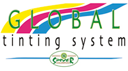
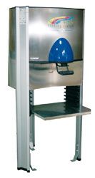
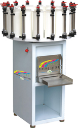
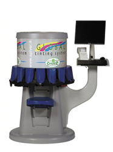
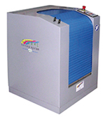
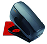

Тонирующие системы

Применяя подобные системы колеровки, вы сможете добиться всех ваших целей вне зависимости от размеров ваших объектов.
- Краски - Эмали (вода и растворитель), в том числе эмали ferromicaceo - Дерево покрытия воды (60 цветов с единственной нейтральной базы) - Внешняя линия; большой хроматической решения также для новых цветов, которые сегодня трудно получить (лимона желтые, апельсины, красные жив) с исключительной стабильности не только для продуктов синтетической линии, но также для таких продуктов, как те, которые основаны на извести, силикат калия и силоксановая. - Декоративные; можете покрасить декоративные изделия линии артхе (более 3000 оттенков STUCCOMARMO только с одним основанием). - Эпоксидные эмали воды - Глазури nitrosynthetic быстрое высыханиеТонер электронный D-200
Тонер ручной
Тонер электронный D-200
Миксер
Спектрометр
Преимущества:
- Широкий диапазон цветов более 20000 цветов - Меньшее количество оснований (например: для красок на водной основе и лаки 3 + белый продажа) - Снижение количество краски (12 супер концентрированные универсальные красители, 5 и 7 органические оксиды, и 4 пятна на водной основе для металлических комплексов обладают высокой устойчивостью к УФ, атмосферным воздействиям и высоким рН, предназначен для получения различных цветовых решений в минеральных продуктов для внешней) - Раздача программного обеспечения и колориметрии высокого универсальность сопряжена с Спектрофотометр высокую надежность. - Обширная база отражения ценностей папок конкурентов (более 20000) - Низкая стоимость цветом.Декоративные покрытия
Дополнительные продукты
Компания
Официальным представителем Spiver в Республике Беларусь является ОДО "Интерьерстрой"
Наш адрес: город Минск, улица Лещинского, дом 55, офис 4
Телефон-факс: (+375 17) 254-33-34
© 2015 SPIVER, ARTHE - Итальянская декоративная линия